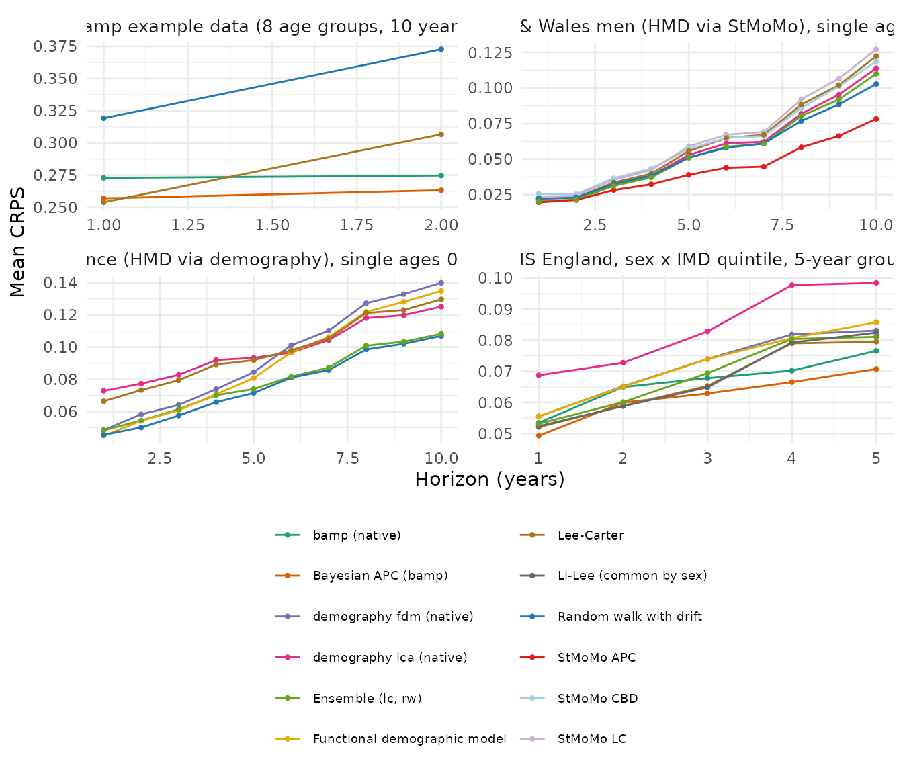

mortensor wraps established implementations (Lee-Carter as in StMoMo and demography, the functional demographic model of demography, Bayesian age-period-cohort models of bamp) and adds its own data handling, predictive draws, backtests and coherence. Two questions follow:
- Fidelity: given the same data and settings, do the wrappers reproduce the original packages?
- Accuracy: how do forecasts made with the original packages, used as their documentation recommends, compare with mortensor pipelines in rolling-origin backtests?
The computations take about an hour, mostly for MCMC chains, and are
run by dev/compare-packages.R in the source repository;
this vignette shows the code and reads the stored results. Versions
used:
res$settings$versions
#> mortensor demography bamp StMoMo forecast
#> "0.1.9000" "2.0.1" "3.0.0" "0.4.1" "8.21.1"Fidelity
Lee-Carter
lee_carter() fits the Poisson log-bilinear model of
Brouhns, Denuit and Vermunt (2002) as StMoMo does, and
lee_carter(method = "svd") the original least-squares
version with the adjustment of k to the observed deaths, as
demography::lca() does. Maximum absolute differences of log
death rates:
res$fidelity$lee_carter[, .(comparison, data, max_abs_difference = signif(max_abs_difference, 2))]
#> comparison
#> <char>
#> 1: lee_carter() vs StMoMo lc(): fitted log rates
#> 2: lee_carter() vs StMoMo lc(): central forecast, log rates, h = 1-10
#> 3: lee_carter(method = "svd") vs demography lca(): fitted log rates
#> 4: lee_carter(method = "svd") vs demography lca(): central forecast, log rates, h = 1-10
#> data max_abs_difference
#> <char> <num>
#> 1: England & Wales men 55-89, 1961-2011 2.5e-05
#> 2: England & Wales men 55-89, 1961-2011 2.8e-05
#> 3: France men 0-95, 1950-2006 9.1e-07
#> 4: France men 0-95, 1950-2006 3.3e-09The fitted rates agree to optimisation tolerance. Central forecasts differ only through the drift: both packages extrapolate k with a random walk with drift.
Functional demographic model
hyndman_ullah() calls demography::fdm() and
draws paths with simulate() from the forecast. With the
same input (French men 0-95, 1950-2006, 6 components, ARIMA, without the
smoothing over age that hyndman_ullah() applies by
default), the median of 2,000 mortensor draws is compared with
demography’s point forecast, and the width of the central 80% interval
of the draws with demography’s 80% interval:
res$fidelity$fdm[, lapply(.SD, signif, 3)]
#> horizon median_abs_log_diff_point max_abs_log_diff_point
#> <num> <num> <num>
#> 1: 1 0.000995 0.00731
#> 2: 10 0.001400 0.01080
#> 3: 20 0.002830 0.01660
#> width80_ratio_median
#> <num>
#> 1: 0.807
#> 2: 0.935
#> 3: 0.969demography computes its intervals analytically from the variance of
the coefficients, the model error and the observational variance;
simulate() draws coefficient paths and model errors. Width
ratios below one mean that the simulated paths are narrower than
demography’s analytic intervals.
Bayesian age-period-cohort models
apc_bayes() calls bamp::bamp() and
bamp::predict_apc(). On bamp’s own example data (8
five-year age groups, 10 years), the forecast log rates of three future
years from apc_bayes() are compared with a native bamp run
with the same priors and chain settings; a second native run with
another seed shows the Monte Carlo variation of bamp itself. Differences
are in units of the posterior standard deviation:
res$fidelity$bamp[, lapply(.SD, function(v) if (is.numeric(v)) signif(v, 2) else v)]
#> comparison max_abs_diff_median_in_sd
#> <char> <num>
#> 1: apc_bayes() vs bamp (seed 1) 0.055
#> 2: bamp (seed 2) vs bamp (seed 1) 0.061
#> max_abs_diff_90_bounds_in_sd
#> <num>
#> 1: 0.11
#> 2: 0.11Accuracy
Design
Each original package is wrapped as a model specification that
returns its own predictive distribution, so that
mt_backtest() scores all forecasts in the same way: rolling
origins, predictive draws compared with the observed death rates at
their observed resolution, CRPS on the log scale, interval coverage. The
adapters (abbreviated):
# demography: functional demographic model, the documented workflow
fit_model.mt_spec_native_fdm <- function(spec, D, E, ages, periods, ...) {
dd <- demography::demogdata(pmax(D, 0.5) / E, pop = E, ages = ages$lower, years = periods,
type = "mortality", label = "native", name = "s")
if (all(utils::head(ages$upper - ages$lower, -1) == 1)) dd <- demography::smooth.demogdata(dd)
list(fit = demography::fdm(dd, series = "s", order = 6))
}
simulate_model.mt_spec_native_fdm <- function(spec, fit, h, n_draws, ...) {
fc <- forecast::forecast(fit$fit, h = h) # point forecast and total variance
mu <- log(fc$rate$s)
sd <- sqrt(fc$var$total)
array(exp(rep(mu, n_draws) + rep(sd, n_draws) * rnorm(length(mu) * n_draws)), c(dim(mu), n_draws))
}
# bamp: random walks of first order, posterior samples of future rates
fit_model.mt_spec_native_bamp <- function(spec, D, E, ages, periods, ...) {
list(model = bamp::bamp(round(t(D)), round(t(E)), age = "rw1", period = "rw1", cohort = "rw1",
periods_per_agegroup = 5, mcmc.options = mcmc_control("fast")$options))
}
simulate_model.mt_spec_native_bamp <- function(spec, fit, h, n_draws, ...) {
pr <- bamp::predict_apc(fit$model, periods = h)$samples$pr
... # future periods, n_draws samples, as [age, period, draw]
}demography::lca() is wrapped in the same way (random
walk with drift for k, its 95% bounds); StMoMo models are used through
stmomo(), which calls fit() and
simulate(). The native distributions describe the smooth
death rates; mortensor’s predictive draws add the variation of observed
rates around them.
Data sets: the ONS deprivation data (ons_data, sex by
quintile, 5-year age groups with 0-4 combined so that bamp has equal
widths), France (HMD via demography, single ages 0-95), England &
Wales men (HMD via StMoMo, single ages 55-89) and bamp’s example
data.
acc <- res$accuracy
for (d in unique(acc$data)) {
cat("\n", d, "\n", sep = "")
print(acc[data == d, .(model, crps = fmt(crps, 4), cov50 = fmt(cov50, 2), cov80 = fmt(cov80, 2),
cov95 = fmt(cov95, 2), seconds = round(seconds))], row.names = FALSE)
}
#>
#> ONS England, sex x IMD quintile, 5-year groups
#> model crps cov50 cov80 cov95 seconds
#> <char> <char> <char> <char> <char> <num>
#> Bayesian APC (bamp) 0.0619 0.48 0.76 0.92 2463
#> bamp (native) 0.0666 0.37 0.62 0.79 2083
#> Lee-Carter 0.0670 0.35 0.62 0.81 2
#> Li-Lee (common by sex) 0.0676 0.36 0.63 0.82 1
#> Ensemble (lc, rw) 0.0688 0.44 0.75 0.92 3
#> demography fdm (native) 0.0719 0.33 0.57 0.76 8
#> Functional demographic model 0.0722 0.34 0.63 0.82 30
#> demography lca (native) 0.0841 0.21 0.39 0.56 1
#>
#> France (HMD via demography), single ages 0-95
#> model crps cov50 cov80 cov95 seconds
#> <char> <char> <char> <char> <char> <num>
#> Random walk with drift 0.0765 0.65 0.91 0.98 2
#> Ensemble (lc, rw) 0.0790 0.51 0.84 0.98 2
#> Functional demographic model 0.0899 0.30 0.52 0.70 19
#> demography fdm (native) 0.0941 0.24 0.43 0.59 13
#> Lee-Carter 0.0977 0.33 0.57 0.79 2
#> demography lca (native) 0.0982 0.31 0.54 0.74 2
#>
#> England & Wales men (HMD via StMoMo), single ages 55-89
#> model crps cov50 cov80 cov95 seconds
#> <char> <char> <char> <char> <char> <num>
#> StMoMo APC 0.0432 0.35 0.77 0.98 3
#> Random walk with drift 0.0554 0.48 0.80 0.97 0
#> Ensemble (lc, rw) 0.0563 0.42 0.74 0.95 1
#> demography lca (native) 0.0583 0.31 0.60 0.79 0
#> Lee-Carter 0.0619 0.31 0.58 0.79 0
#> StMoMo CBD 0.0625 0.35 0.60 0.82 1
#> StMoMo LC 0.0646 0.27 0.52 0.75 1
#>
#> bamp example data (8 age groups, 10 years)
#> model crps cov50 cov80 cov95 seconds
#> <char> <char> <char> <char> <char> <num>
#> Bayesian APC (bamp) 0.2602 0.46 0.58 0.75 31
#> bamp (native) 0.2738 0.23 0.42 0.60 26
#> Lee-Carter 0.2804 0.40 0.65 0.88 1
#> Random walk with drift 0.3460 0.54 0.81 0.85 0
library(ggplot2)
ggplot(res$by_horizon, aes(horizon, crps, colour = model)) +
geom_line() + geom_point(size = 0.8) +
facet_wrap(~ data, scales = "free", ncol = 2) +
labs(x = "Horizon (years)", y = "Mean CRPS", colour = NULL) +
scale_colour_mortensor(type = "categorical") +
theme_mortensor() +
theme(legend.text = element_text(size = 7)) +
guides(colour = guide_legend(ncol = 2))
Results
Fidelity. The Lee-Carter fits agree with StMoMo and
demography to optimisation tolerance (largest difference of log rates
3e-05). The medians of the simulated functional-demographic-model paths
agree with demography’s point forecasts to within 0.3% (median absolute
log difference); the simulated 80% intervals are 19% narrower than
demography’s analytic intervals at horizon 1 and nearly as wide at 20
years. The Bayesian APC forecasts of apc_bayes() differ
from native bamp by about as much as two independent bamp runs differ
from each other, so the wrapper adds no difference beyond Monte Carlo
error.
Accuracy. Four observations hold across the data sets:
- The same model used through mortensor scores better than the native
package in 5 of 7 comparisons, mainly because mortensor’s predictive
draws include the variation of observed rates around the smooth
forecast, which the native intervals omit. This improves coverage most:
bamp on the ONS data covers 0.79 of observed rates at 95% natively and
0.92 through
apc_bayes(); the functional demographic model 0.76 against 0.82 (ONS) and 0.59 against 0.70 (France). The exceptions are the functional demographic model on the ONS data, where both have the same CRPS (0.072), anddemography::lca()on England & Wales men, whose least-squares fit with k adjusted to the observed deaths is more accurate there than the Poisson Lee-Carter oflee_carter()and of StMoMo. - No single model is best everywhere. The Bayesian APC model is the most accurate on the ONS data and on bamp’s example, the StMoMo APC model on England & Wales men 55-89 (cohort effects), and the random walk with drift on France, where the age pattern of mortality decline changed over the period and Lee-Carter extrapolates the old pattern.
- Single structured models (Lee-Carter,
lca(), functional demographic model, StMoMo LC and CBD) have 95% intervals that cover 56% to 82% of the observed rates on the three larger data sets, so they understate the uncertainty of real forecasts. On the three larger data sets the random walk and the ensemble of Lee-Carter and random walk cover 92% to 98% (bamp’s example has only 48 scored cells). - The ensemble is never the most accurate but always close to the best (CRPS within 11% of the best model on the ONS data, 3% on France, 30% on England & Wales men) with near-nominal coverage, at the cost of seconds; the Bayesian APC models took about 40 minutes per backtest on the ONS data.
On data like these, an ensemble is a robust default, and a backtest
on the data at hand (mt_backtest()) decides whether a
structured model such as an APC model is worth its cost.
References
Brouhns N, Denuit M, Vermunt JK (2002). A Poisson log-bilinear regression approach to the construction of projected lifetables. Insurance: Mathematics and Economics 31(3): 373-393.
Hyndman RJ, Ullah MS (2007). Robust forecasting of mortality and fertility rates: a functional data approach. Computational Statistics & Data Analysis 51(10): 4942-4956.
Lee RD, Carter LR (1992). Modeling and forecasting U.S. mortality. Journal of the American Statistical Association 87(419): 659-671.
Schmid VJ, Held L (2007). Bayesian age-period-cohort modeling and prediction: BAMP. Journal of Statistical Software 21(8): 1-15.
Villegas AM, Kaishev VK, Millossovich P (2018). StMoMo: an R package for stochastic mortality modeling. Journal of Statistical Software 84(3): 1-38.